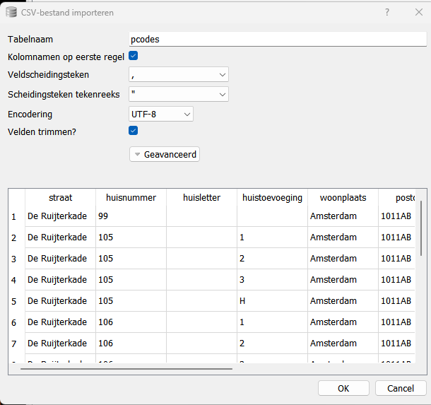
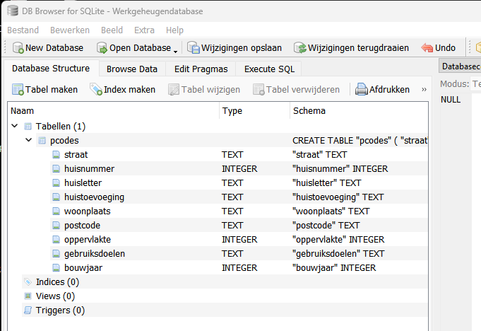
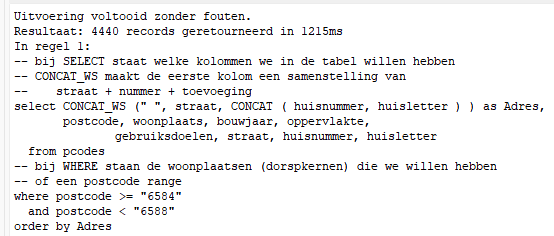
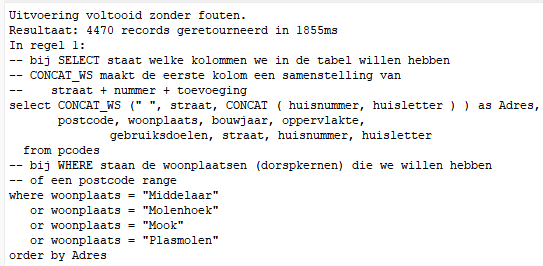
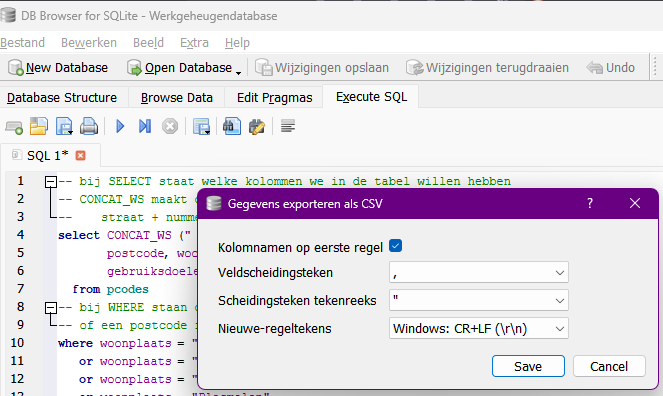
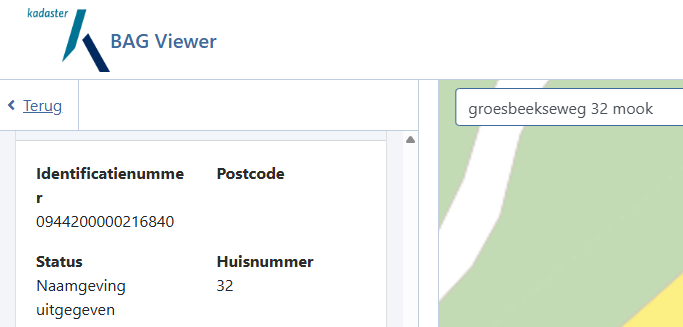
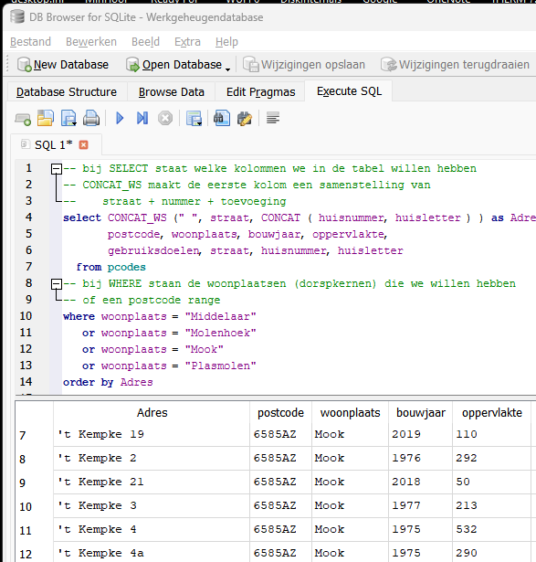
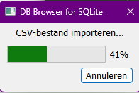

Als je het energieverbruik van een woning wilt vergelijken met het energieverbruik in een andere periode of met een andere woning, dan moet je op de een of andere manier compenseren voor variaties in het weer. Om het energieverbruik te compenseren voor weersinvloeden, wordt vaak de graaddagen compensatie toegepast.
Op zich een goede methode, maar er worden vaak een paar dingen vergeten
1. Bij snelle buitentemperatuur veranderingen, wordt een foutief aantal graaddagen berekend
2. De stookgrens wordt vaak niet (goed) ingesteld
Ad 1. Snelle temperatuur variaties
Dit is een complex probleem dat niet gemakkelijk in een model te vangen is. Als je een lang genoeg periode (meerdere maanden) neemt, is de verwachting dat het effect zich redelijk uit middelt. Ik hanteer als vuistregel dat alleen graaddagen berekend over een jaar, waarbij je dus zowel een periode met een stijgende als een dalende buitentemperatuur hebt, als betrouwbaar kunnen worden aangemerkt. We gaan hier niet verder op dit punt in.
Ad 2. De juiste stookgrens
De stookgrens is de daggemiddelde buitentemperatuur, waarbij de betreffende woning geen verwarming nodig heeft.
Je kunt dit ook op een andere manier verwoorden: De stookgrens is de daggemiddelde buitentemperatuur, waarbij het warmteverlies van je woning kan worden opgewekt met de interne warmtebronnen, zoals elektrische apparatuur en aanwezige personen.
Standaard staat de stookgrens ingesteld gelijk aan de daggemiddelde binnentemperatuur.
Als je woning redelijk tot goed geïsoleerd is, zal deze stookgrens echter veel lager liggen en dus zal het aantal graaddagen ook lager liggen.
Het meten van de stookgrens is ook een indicatie hoe goed je woning is geïsoleerd. Hoewel ik daar geen uitgebreid onderzoek naar heb gedaan, kom ik voorlopig tot de volgende classificatie voorstellen:
- Stookgrens >= 18 °C : slecht geïsoleerde woning
- Stookgrens < 14 °C : behoorlijk goed geïsoleerde woning
- Stookgrens < 10 °C : goed geïsoleerde woning
- Stookgrens < 5 °C : passief huis
Als men betere gegevens heeft of andere ideeën omtrent deze classificatie, houd ik me aanbevolen.
September / oktober is de ideale tijd om je eigen stookgrens (van een redelijk tot goed geïsoleerde woning) te bepalen. In deze periode schommelt de buitentemperatuur tussen de 10 en 15 graden. Voor slecht geïsoleerde woningen zou je augustus/september kunnen gebruiken. Passief woningen kunnen alleen in december/januari worden gemeten.
De meest gebruikte manier om graaddagen te berekenen is via de website van MinderGas: https://www.mindergas.nl/degree_days_calculation
Hieronder de berekening over de afgelopen 14 dagen. Het resultaat is bijna 76 graaddagen, terwijl ik de verwarming nog niet heb aangehad.
De daggemiddelde binnentemperatuur is ingesteld op 18 °C. (Voor woningen met vloerverwarming of een warmtepomp moet een hogere temperatuur worden ingesteld.)
Je ziet dat hier de stookgrens gelijk is aan de daggemiddelde binnentemperatuur.

Als nu de stookgrens wordt verlaagd tot 11 °C, daalt het aantal graaddagen tot 21, zoals hieronder getoond.
Als we de stookgrens nog verder verlagen tot 10 °C (niet getoond) wordt het aantal graaddagen nul.
Aangezien ik op dit moment de verwarming nog niet heb aan gehad, en het niet koud heb gehad, ligt mijn stookgrens dus beneden de 10 graden.
Conclusie is dan ook dat het verwarmde deel van mijn woning goed is geïsoleerd.

In deze periode kun je ook op een andere manier bekijken wat je stookgrens is, namelijk door met een thermometer het temperatuurverloop in je woning te meten.
Op zich hoeft de thermometer niet nauwkeurig te zijn maar hij moet wel een resolutie van 0.1 °C hebben.
Hier zie het verloop van de temperatuur in mijn woning gedurende 24 uur. Het beste kun je meten van 0:00 tot 24:00 uur, omdat je over die periode een nauwkeurige buitentemperatuur bij het KNMI kunt ophalen.

wat je ziet is gisteren overdag de temperatuur in de woning met 1 °C is gestegen als gevolg van de interne warmtebronnen.
Als we nu een nauwkeurige buitentemperatuur ophalen bij bijvoorbeeld het KNMI, weten we dat onze stookgrens lager ligt dan die buitentemperatuur.
De gemiddelde buitentemperatuur bedroeg 10.7 °C (zie plaatje hieronder), dus ook hieruit weer dezelfde conclusie, de stookgrens voor mijn woning ligt beneden de 11 °C.
We kunnen een nauwkeurig daggemiddelde temperatuur ophalen bij het KNMI (met dank aan Mart Hinssen)
https://www.knmi.nl/nederland-nu/klimatologie/geografische-overzichten

We zien dat de temperatuur in Mook en Middelaar hier dus een stuk lager ligt dan in Volkel.
Dat betekent dat deze methode dus nauwkeuriger is dan de weergegevens van het dichtstbijzijnde officiële weerstation, namelijk Volkel.
Het KNMI station in Arcen mist nogal wat data en heeft ook omgevingsproblemen en wordt daarom momenteel vervangen door een KNMI station in Horst.

Als we het aantal graaddagen als functie van de stookgrens uitzetten, krijgen we de volgende grafiek.
We zie dat deze grafiek goed te benaderen is door een lineaire formule.

Daggegevens kunnen onder andere worden opgehaalk bij het KNMI:
https://www.daggegevens.knmi.nl

